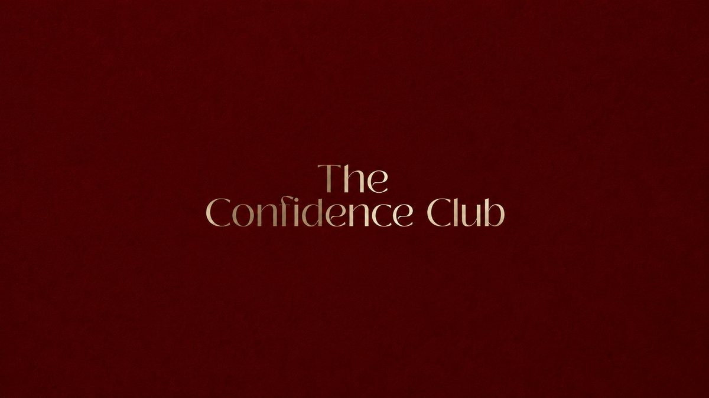

Você já sabe a mulher que quer ser. A que não se diminui para ser escolhida e não abre mão do que deseja por medo de não ser capaz. Está na hora de confiar em si o suficiente para se tornar ela.
Quero entrar para o Confidence Club12x de R$41,04 ou R$397 à vista
Você sabe quando deveria colocar um limite, ou quando está aceitando menos do que merece.
Sabe que tem potencial para crescer profissionalmente, ganhar mais, começar aquele projeto.
Sabe até o que gostaria de dizer… mas mede as palavras por medo da reação dos outros.
E mesmo sabendo de tudo isso, na hora de agir você trava.
O problema talvez não seja você não saber o que fazer.
É ainda não confiar em si o suficiente para fazer.
Isso não afeta só como você se sente, decide a vida que você vive: o mínimo que você aceita, a validação que você busca, a oportunidade que você não tenta.
Você consegue enxergar a mulher que poderia ser. Só ainda não consegue sustentá-la nas suas escolhas.
Talvez o que você esteja buscando não seja simplesmente "ter mais autoestima". Você quer sentir que pode confiar em si para conduzir a própria vida. E é essa mulher que nós vamos construir no Confidence Club.
Uma comunidade viva de mulheres decididas a se tornarem a versão mais confiante de si mesmas.
O ambiente importa: as pessoas com quem você convive influenciam aquilo que começa a parecer possível para você. Por isso o Confidence Club é um Club de verdade, não apenas mais um curso gravado.
Quando você está sozinha, é fácil negociar com a própria insegurança:
"Depois eu faço."
"Talvez eu esteja exagerando."
"Quando eu estiver mais preparada eu começo."
Mas alguma coisa muda quando você está cercada por mulheres que também decidiram crescer: uma coloca o limite que você ainda tem medo de colocar, outra começa o projeto que adiou durante anos, outra para de aceitar o mínimo.
"Se ela conseguiu dar esse passo, talvez eu também consiga."
Não é uma biblioteca de vídeos que você assiste sozinha. É um espaço que pulsa todo dia, e eu estarei lá com vocês.
Você conversa com outras mulheres que têm o mesmo objetivo, troca experiências e se reconhece em histórias que parecem a sua.
Eventos ao vivo com a Thais para conversar sobre os temas mais pedidos, e desafios para todas alcançarem seus objetivos e crescerem juntas.
Eu não quero falar para uma comunidade. Quero liderar uma comunidade da qual eu também faço parte.
Para parar de negociar o próprio valor de acordo com quem te escolhe, quem te aprova ou quem reconhece você.
Para transformar a maneira como você se enxerga e construir uma relação mais segura com a mulher que você vê no espelho, e com quem você acredita ser.
Para confiar na sua capacidade de escolher, agir, tentar, se posicionar e lidar com as consequências das suas decisões.
E então vamos levar tudo isso para os lugares em que a insegurança mais aparece: nos seus relacionamentos e na sua vida profissional.
Para a mulher que quer parar de:
Não para se tornar uma mulher que "não precisa de ninguém". Mas para conseguir amar alguém sem precisar se abandonar para isso.
Para a mulher que pensa: "Eu sei que tenho potencial, mas me sinto travada." Que quer crescer, ganhar mais, mudar de carreira, empreender, aparecer, estudar ou buscar oportunidades maiores… mas ainda duvida se é capaz.
Aqui nós vamos trabalhar a mulher por trás da carreira. Porque muitas vezes não falta competência. Falta confiança para ocupar o espaço que a sua competência já permitiria ocupar.
Eu já fui extremamente insegura. Já vivi dependência emocional. Já estive em um relacionamento abusivo. Já existiu uma versão minha que sabia racionalmente que determinadas situações me faziam mal e, ainda assim, tinha dificuldade de sair delas.
"Eu sei que não mereço isso, mas continuo aceitando." Eu entendo.
"Eu sei o que deveria fazer, mas não consigo." Eu entendo.
Foi também reconstruindo minha própria relação comigo que comecei a entender algo que hoje atravessa profundamente o meu trabalho: confiança não é nascer sendo uma mulher segura. É construir uma relação consigo mesma forte o suficiente para não precisar continuar se abandonando por medo.
Foi essa mulher que eu precisei construir. É esse processo que quero conduzir com vocês.
Existe uma armadilha na insegurança: esperar confiança para agir. Mas confiança também é construída enquanto você age, a cada limite que sustenta, a cada decisão que toma, a cada vez que escolhe não se abandonar.
Pouco a pouco, você começa a acumular uma evidência muito poderosa: "Eu posso confiar em mim."
12x de R$41,04
ou R$397 à vista no cartão
Quero entrar para o Confidence ClubSe não for para você, devolvemos 100% do seu investimento
Se dentro de 7 dias você sentir que o Confidence Club não é pra você, é só enviar uma mensagem e devolvemos 100% do seu investimento. Sem perguntas, sem burocracia.

Pare de deixar a insegurança escolher seus relacionamentos, limitar sua carreira e decidir até onde você pode ir.
Quero entrar para o Confidence Club